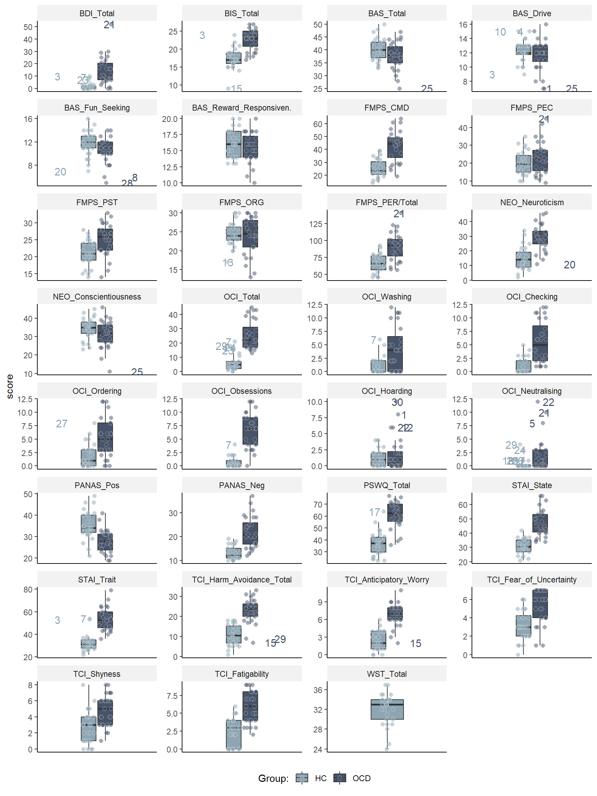

# Load data
questionnaires <- read.spss("./data/psychoEQExport.sav", to.data.frame = TRUE, add.undeclared.levels = "no") # add.undeclared.levels required to prevent irrelevant warning message
# Select relevant variables
questionnaires <- questionnaires[,c("CODE", "BD2SUMT0", "BASO00T0", "BASO01T0", "BASO02T0", "BASO03T0", "BASO04T0", "FMPO00T0", "FMPO01T0", "FMPO02T0", "FMPO03T0", "FMPO04T0", "NNGO00T0", "NNGO01T0", "OCISUMT0", "OCIO00T0", "OCIO01T0", "OCIO02T0", "OCIO03T0", "OCIO04T0", "OCIO05T0" ,"PANO00T0", "PANO01T0", "PSWSUMT0", "STSSUMT0", "STTSUMT0", "TCISUMT0", "TCIO00T0", "TCIO01T0" ,"TCIO02T0" ,"TCIO03T0" ,"WSTSUMT0")]
# Rename variables
colnames(questionnaires) <- c("participant_id", "BDI_Total", "BIS_Total", "BAS_Total", "BAS_Drive", "BAS_Fun_Seeking", "BAS_Reward_Responsiven.", "FMPS_CMD", "FMPS_PEC", "FMPS_PST", "FMPS_ORG", "FMPS_PER/Total", "NEO_Neuroticism", "NEO_Conscientiousness", "OCI_Total", "OCI_Washing", "OCI_Checking", "OCI_Ordering", "OCI_Obsessions", "OCI_Hoarding", "OCI_Neutralising", "PANAS_Pos", "PANAS_Neg", "PSWQ_Total", "STAI_State", "STAI_Trait", "TCI_Harm_Avoidance_Total", "TCI_Anticipatory_Worry", "TCI_Fear_of_Uncertainty", "TCI_Shyness", "TCI_Fatigability", "WST_Total")
# Exclude P_02 (due to retainer) and C_02 (as preregistered: patients are excluded with their match)
questionnaires <- questionnaires[questionnaires$participant_id != "ModERN_tDCS_P02" & questionnaires$participant_id != "ModERN_tDCS_C02",]
# C_12 repeated the WST at T2, because score at T1 was very low (22); score achieved at T2 was 25; we will use this score
questionnaires[questionnaires$participant_id == "ModERN_tDCS_C12",]$WST_Total <- 25
# Make format wide to long
df4boxplots <- gather(questionnaires, trait, score, BDI_Total:WST_Total, factor_key=TRUE, na.rm = TRUE)
# Add group variable
df4boxplots <- df4boxplots %>%
dplyr::mutate(group = ifelse(substr(participant_id,13,13) == "C", "HC", "OCD"))
# Make participant_id variable numeric (needed for outlier function)
df4boxplots$participant_id <- as.numeric(substr(df4boxplots$participant_id,14,15))
Plot
# Set seed to always produce same jitter
set.seed(193)
# Plot trait variables
plot_trait_variables <- df4boxplots %>%
dplyr::group_by(group, trait) %>%
dplyr::mutate(outlier = ifelse(is_outlier(score), participant_id, as.numeric(NA))) %>%
ggplot(., aes(x = trait, y = score, fill = group)) +
geom_boxplot(width=4, outlier.shape = NA) + # remove outliers here, otherwise they are plotted twice (also as data point)
geom_point(aes(color = condition), alpha = 0.5, colour = "white", size = 2, shape=21, position = position_jitterdodge(dodge.width = 4, jitter.width = 1.5)) +
geom_text(aes(label = outlier, colour = group), position = position_jitterdodge(dodge.width = 10, jitter.width = 5), size = 4, na.rm = TRUE) +
facet_wrap(~ trait, scales="free", ncol = 4) +
scale_fill_manual(values = my_figure_colors, name = "Group:") +
scale_colour_manual(values = my_figure_colors, name = "Group:") +
theme(strip.text.x = element_text(size = 12)) +
my_figure_theme
# Save plot
ggsave("./figures/figure_trait_variables.tiff", width = 40, height = 30, units = "cm", dpi=600, compression = "lzw")
# Display plot
plot_trait_variables

LS0tDQp0aXRsZTogIlRyYWl0IFZhcmlhYmxlcyINCm91dHB1dDogDQogIGh0bWxfZG9jdW1lbnQNCg0KLS0tDQoNCjwhLS0gU2V0IGdlbmVyYWwgc2V0dGluZ3MgLS0+DQoNCmBgYHtyIHNldHVwLCBpbmNsdWRlID0gRkFMU0V9DQoNCiMgU2V0IGdlbmVyYWwgc2V0dGluZ3MgZm9yIG1hcmtkb3duIGZpbGUNCmtuaXRyOjpvcHRzX2NodW5rJHNldCgNCiAgbWVzc2FnZSA9IEZBTFNFLA0KICB3YXJuaW5nID0gRkFMU0UsDQogIGNvbW1lbnQgPSAiIiwNCiAgcmVzdWx0cyA9ICJob2xkIg0KKQ0KDQoNCiMgQ2xlYXIgZW52aXJvbm1lbnQNCnJtKGxpc3QgPSBscygpKQ0KDQoNCiMgRW5hYmxlL2Rpc2FibGUgY2FjaGluZyBvZiB0aW1lLWNvbnN1bWluZyBjb2RlIGNodW5rcw0Ka25pdHJfY2FjaGVfZW5hYmxlZCA9IFRSVUUNCg0KDQojIExvYWQgcGFja2FnZXMNCmxpYnJhcnkoZHBseXIpICAgICAgIyBmb3IgZGF0YSBtYW5pcHVsYXRpb24NCmxpYnJhcnkoZm9yZWlnbikgICAgIyBmb3Igb3BlbmluZyAuc2F2IGZpbGUNCmxpYnJhcnkoZ2dwbG90MikgICAgIyBmb3IgcGxvdHRpbmcNCmxpYnJhcnkodGlkeXIpICAgICAgIyBmb3IgZ2F0aGVyIGZ1bmN0aW9uDQoNCg0KIyBTZXQgZmlndXJlIHRoZW1lIGFuZCBjb2xvcnMNCm15X2ZpZ3VyZV90aGVtZSA8LSB0aGVtZV9jbGFzc2ljKGJhc2Vfc2l6ZSA9IDExKSArDQogIHRoZW1lKGxlZ2VuZC5wb3NpdGlvbiA9ICJib3R0b20iLCANCiAgICAgICAgc3RyaXAuYmFja2dyb3VuZCA9IGVsZW1lbnRfcmVjdChmaWxsPSJncmV5OTUiLCBsaW5ldHlwZSA9ICJibGFuayIpLA0KICAgICAgICBheGlzLnRpY2tzLnggPSBlbGVtZW50X2JsYW5rKCksDQogICAgICAgIGF4aXMudGV4dC54ID0gZWxlbWVudF9ibGFuaygpLA0KICAgICAgICBheGlzLnRpdGxlLnggPSBlbGVtZW50X2JsYW5rKCksDQogICAgICAgIHBsb3QudGl0bGUgPSBlbGVtZW50X3RleHQoaGp1c3QgPSAwLjUpKSANCiMgaW5zdGFkIG9mIHRoZW1lX2NsYXNzaWM6ICsgdGhlbWVfYXBhKGJhc2Vfc2l6ZSA9IDExKQ0KDQpteV9maWd1cmVfY29sb3JzIDwtIGMoIiM4ZWE2YjQiLCAiIzQ2NTM2OSIpDQoNCg0KIyBDcmVhdGUgZnVuY3Rpb24gdG8gbGFiZWwgb3V0bGllcnMNCmlzX291dGxpZXIgPC0gZnVuY3Rpb24oeCkgew0KICByZXR1cm4oeCA8IHF1YW50aWxlKHgsIDAuMjUpIC0gMS41ICogSVFSKHgpIHwgeCA+IHF1YW50aWxlKHgsIDAuNzUpICsgMS41ICogSVFSKHgpKQ0KfQ0KYGBgDQoNCjwhLS0gTG9hZCBhbmQgY2xlYW4gZGF0YSAtLT4NCg0KYGBge3IgbG9hZC1hbmQtY2xlYW4tZGF0YSwgY2FjaGUgPSBrbml0cl9jYWNoZV9lbmFibGVkfQ0KDQojIExvYWQgZGF0YSANCnF1ZXN0aW9ubmFpcmVzIDwtIHJlYWQuc3BzcygiLi9kYXRhL3BzeWNob0VRRXhwb3J0LnNhdiIsIHRvLmRhdGEuZnJhbWUgPSBUUlVFLCBhZGQudW5kZWNsYXJlZC5sZXZlbHMgPSAibm8iKSAjIGFkZC51bmRlY2xhcmVkLmxldmVscyByZXF1aXJlZCB0byBwcmV2ZW50IGlycmVsZXZhbnQgd2FybmluZyBtZXNzYWdlDQoNCg0KIyBTZWxlY3QgcmVsZXZhbnQgdmFyaWFibGVzDQpxdWVzdGlvbm5haXJlcyA8LSBxdWVzdGlvbm5haXJlc1ssYygiQ09ERSIsICJCRDJTVU1UMCIsICJCQVNPMDBUMCIsICJCQVNPMDFUMCIsICJCQVNPMDJUMCIsICJCQVNPMDNUMCIsICJCQVNPMDRUMCIsICJGTVBPMDBUMCIsICJGTVBPMDFUMCIsICJGTVBPMDJUMCIsICJGTVBPMDNUMCIsICJGTVBPMDRUMCIsICJOTkdPMDBUMCIsICJOTkdPMDFUMCIsICJPQ0lTVU1UMCIsICJPQ0lPMDBUMCIsICJPQ0lPMDFUMCIsICJPQ0lPMDJUMCIsICJPQ0lPMDNUMCIsICJPQ0lPMDRUMCIsICJPQ0lPMDVUMCIgLCJQQU5PMDBUMCIsICJQQU5PMDFUMCIsICJQU1dTVU1UMCIsICJTVFNTVU1UMCIsICJTVFRTVU1UMCIsICJUQ0lTVU1UMCIsICJUQ0lPMDBUMCIsICJUQ0lPMDFUMCIgLCJUQ0lPMDJUMCIgLCJUQ0lPMDNUMCIgLCJXU1RTVU1UMCIpXSANCg0KDQojIFJlbmFtZSB2YXJpYWJsZXMNCmNvbG5hbWVzKHF1ZXN0aW9ubmFpcmVzKSA8LSBjKCJwYXJ0aWNpcGFudF9pZCIsICJCRElfVG90YWwiLCAiQklTX1RvdGFsIiwgIkJBU19Ub3RhbCIsICJCQVNfRHJpdmUiLCAiQkFTX0Z1bl9TZWVraW5nIiwgIkJBU19SZXdhcmRfUmVzcG9uc2l2ZW4uIiwgIkZNUFNfQ01EIiwgIkZNUFNfUEVDIiwgIkZNUFNfUFNUIiwgIkZNUFNfT1JHIiwgIkZNUFNfUEVSL1RvdGFsIiwgIk5FT19OZXVyb3RpY2lzbSIsICJORU9fQ29uc2NpZW50aW91c25lc3MiLCAiT0NJX1RvdGFsIiwgIk9DSV9XYXNoaW5nIiwgIk9DSV9DaGVja2luZyIsICJPQ0lfT3JkZXJpbmciLCAiT0NJX09ic2Vzc2lvbnMiLCAiT0NJX0hvYXJkaW5nIiwgIk9DSV9OZXV0cmFsaXNpbmciLCAiUEFOQVNfUG9zIiwgIlBBTkFTX05lZyIsICJQU1dRX1RvdGFsIiwgIlNUQUlfU3RhdGUiLCAiU1RBSV9UcmFpdCIsICJUQ0lfSGFybV9Bdm9pZGFuY2VfVG90YWwiLCAiVENJX0FudGljaXBhdG9yeV9Xb3JyeSIsICJUQ0lfRmVhcl9vZl9VbmNlcnRhaW50eSIsICJUQ0lfU2h5bmVzcyIsICJUQ0lfRmF0aWdhYmlsaXR5IiwgIldTVF9Ub3RhbCIpICAgDQoNCg0KIyBFeGNsdWRlIFBfMDIgKGR1ZSB0byByZXRhaW5lcikgYW5kIENfMDIgKGFzIHByZXJlZ2lzdGVyZWQ6IHBhdGllbnRzIGFyZSBleGNsdWRlZCB3aXRoIHRoZWlyIG1hdGNoKQ0KcXVlc3Rpb25uYWlyZXMgPC0gcXVlc3Rpb25uYWlyZXNbcXVlc3Rpb25uYWlyZXMkcGFydGljaXBhbnRfaWQgIT0gIk1vZEVSTl90RENTX1AwMiIgJiBxdWVzdGlvbm5haXJlcyRwYXJ0aWNpcGFudF9pZCAhPSAiTW9kRVJOX3REQ1NfQzAyIixdDQoNCg0KIyBDXzEyIHJlcGVhdGVkIHRoZSBXU1QgYXQgVDIsIGJlY2F1c2Ugc2NvcmUgYXQgVDEgd2FzIHZlcnkgbG93ICgyMik7IHNjb3JlIGFjaGlldmVkIGF0IFQyIHdhcyAyNTsgd2Ugd2lsbCB1c2UgdGhpcyBzY29yZSANCnF1ZXN0aW9ubmFpcmVzW3F1ZXN0aW9ubmFpcmVzJHBhcnRpY2lwYW50X2lkID09ICJNb2RFUk5fdERDU19DMTIiLF0kV1NUX1RvdGFsIDwtIDI1DQoNCg0KIyBNYWtlIGZvcm1hdCB3aWRlIHRvIGxvbmcNCmRmNGJveHBsb3RzIDwtIGdhdGhlcihxdWVzdGlvbm5haXJlcywgdHJhaXQsIHNjb3JlLCBCRElfVG90YWw6V1NUX1RvdGFsLCBmYWN0b3Jfa2V5PVRSVUUsIG5hLnJtID0gVFJVRSkNCg0KDQojIEFkZCBncm91cCB2YXJpYWJsZQ0KZGY0Ym94cGxvdHMgPC0gZGY0Ym94cGxvdHMgJT4lDQogIGRwbHlyOjptdXRhdGUoZ3JvdXAgPSBpZmVsc2Uoc3Vic3RyKHBhcnRpY2lwYW50X2lkLDEzLDEzKSA9PSAiQyIsICJIQyIsICJPQ0QiKSkgICANCg0KDQojIE1ha2UgcGFydGljaXBhbnRfaWQgdmFyaWFibGUgbnVtZXJpYyAobmVlZGVkIGZvciBvdXRsaWVyIGZ1bmN0aW9uKQ0KZGY0Ym94cGxvdHMkcGFydGljaXBhbnRfaWQgPC0gYXMubnVtZXJpYyhzdWJzdHIoZGY0Ym94cGxvdHMkcGFydGljaXBhbnRfaWQsMTQsMTUpKQ0KYGBgDQoNCiMjIFBsb3QNCioqKg0KDQpgYGB7ciBwbG90LXRyYWl0LXZhcmlhYmxlcywgY2FjaGUgPSBrbml0cl9jYWNoZV9lbmFibGVkLCBmaWcud2lkdGggPSA5LCBmaWcuaGVpZ2h0ID0gMTIsIGZpZy5jYXB0aW9uID0gIk5vdGUuIFN1bSBzY29yZXMgYXJlIHBsb3R0ZWQgKG5vdCBtZWFuIHNjb3JlcyksIGJlY2F1c2UgZm9yIEJESSBhbmQgT0NJIG9ubHkgc3VtIHNjb3JlcyBhcmUgYXZhaWxhYmxlIGFuZCBtaXNzaW5nIGRhdGEgYXJlIG5vdCBwb3NzaWJsZSBiZWNhdXNlIGRhdGEgd2VyZSBhcXVpcmVkIHdpdGggdGFibGV0OyBleGNlcHQgZm9yIE5FTyBhbmQgQklTL0JBUywgYWNjb3JkaW5nIHRvIG1hbnVhbHMsIHNjb3JpbmcgaXMgYmFzZWQgb24gc3VtIHNjb3Jlcy4pIn0NCg0KIyBTZXQgc2VlZCB0byBhbHdheXMgcHJvZHVjZSBzYW1lIGppdHRlcg0Kc2V0LnNlZWQoMTkzKQ0KDQoNCiMgUGxvdCB0cmFpdCB2YXJpYWJsZXMNCnBsb3RfdHJhaXRfdmFyaWFibGVzIDwtIGRmNGJveHBsb3RzICU+JQ0KICBkcGx5cjo6Z3JvdXBfYnkoZ3JvdXAsIHRyYWl0KSAlPiUNCiAgZHBseXI6Om11dGF0ZShvdXRsaWVyID0gaWZlbHNlKGlzX291dGxpZXIoc2NvcmUpLCBwYXJ0aWNpcGFudF9pZCwgYXMubnVtZXJpYyhOQSkpKSAlPiUNCiAgZ2dwbG90KC4sIGFlcyh4ID0gdHJhaXQsIHkgPSBzY29yZSwgZmlsbCA9IGdyb3VwKSkgKyANCiAgZ2VvbV9ib3hwbG90KHdpZHRoPTQsIG91dGxpZXIuc2hhcGUgPSBOQSkgKyAgICAgICAgICAjIHJlbW92ZSBvdXRsaWVycyBoZXJlLCBvdGhlcndpc2UgdGhleSBhcmUgcGxvdHRlZCB0d2ljZSAoYWxzbyBhcyBkYXRhIHBvaW50KQ0KICBnZW9tX3BvaW50KGFlcyhjb2xvciA9IGNvbmRpdGlvbiksIGFscGhhID0gMC41LCBjb2xvdXIgPSAid2hpdGUiLCBzaXplID0gMiwgc2hhcGU9MjEsIHBvc2l0aW9uID0gcG9zaXRpb25faml0dGVyZG9kZ2UoZG9kZ2Uud2lkdGggPSA0LCBqaXR0ZXIud2lkdGggPSAxLjUpKSArDQogIGdlb21fdGV4dChhZXMobGFiZWwgPSBvdXRsaWVyLCBjb2xvdXIgPSBncm91cCksIHBvc2l0aW9uID0gcG9zaXRpb25faml0dGVyZG9kZ2UoZG9kZ2Uud2lkdGggPSAxMCwgaml0dGVyLndpZHRoID0gNSksIHNpemUgPSA0LCBuYS5ybSA9IFRSVUUpICsgDQogIGZhY2V0X3dyYXAofiB0cmFpdCwgc2NhbGVzPSJmcmVlIiwgbmNvbCA9IDQpICsNCiAgc2NhbGVfZmlsbF9tYW51YWwodmFsdWVzID0gbXlfZmlndXJlX2NvbG9ycywgbmFtZSA9ICJHcm91cDoiKSArDQogIHNjYWxlX2NvbG91cl9tYW51YWwodmFsdWVzID0gbXlfZmlndXJlX2NvbG9ycywgbmFtZSA9ICJHcm91cDoiKSArDQogIHRoZW1lKHN0cmlwLnRleHQueCA9IGVsZW1lbnRfdGV4dChzaXplID0gMTIpKSArDQogIG15X2ZpZ3VyZV90aGVtZSANCg0KDQojIFNhdmUgcGxvdA0KZ2dzYXZlKCIuL2ZpZ3VyZXMvZmlndXJlX3RyYWl0X3ZhcmlhYmxlcy50aWZmIiwgd2lkdGggPSA0MCwgaGVpZ2h0ID0gMzAsIHVuaXRzID0gImNtIiwgZHBpPTYwMCwgY29tcHJlc3Npb24gPSAibHp3IikNCg0KDQojIERpc3BsYXkgcGxvdA0KcGxvdF90cmFpdF92YXJpYWJsZXMNCmBgYA0KPGJyPjxicj4NCg==